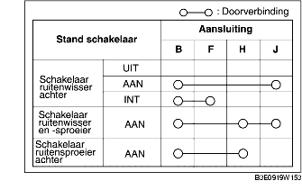

CONTROLE SCHAKELAAR RUITENWISSER EN -SPROEIER ACHTER
B3E091966122W05
1. Controleer of de doorverbinding tussen de aansluitingen van de schakelaar is zoals is aangegeven in de tabel.
-
• Vervang de ruitenwisser- en ruitensproeierschakelaar als deze niet aan de specificatie voldoet.
